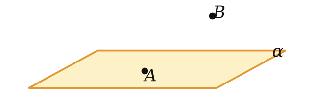
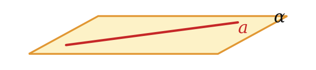
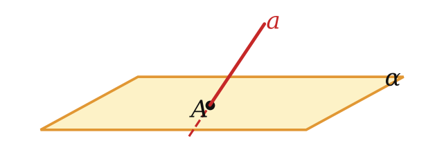

Теория
С чего начинается геометрия
Любое определение опирается на слова, которые уже известны. «Трапеция — это четырёхугольник, у которого две стороны параллельны, а две другие нет»: здесь нужны слова «четырёхугольник», «сторона», «параллельны». Их тоже когда-то определяли через другие слова, и так далее. Эта цепочка не может быть бесконечной — где-то она должна начаться. Поэтому несколько самых первых понятий принимают без определения. Их называют основными понятиями.
В планиметрии основными были точка и прямая. В стереометрии к ним добавляется третье — плоскость. Представить плоскость помогают гладь пруда в безветренную погоду, зеркало, поверхность стола — только мысленно продолженные во все стороны без конца. У плоскости нет края и нет толщины.
Можно сказать так: в планиметрии мы всё время жили в одной плоскости — на листе тетради. В стереометрии плоскостей бесконечно много, и они по-разному расположены в пространстве. Плоскость, как и прямая, состоит из точек, то есть это множество точек.
Плоскости обозначают маленькими греческими буквами α, β, γ, … («альфа», «бета», «гамма»). На рисунке плоскость изображают параллелограммом — так выглядит в перспективе кусок стола, если смотреть на него сбоку.
Как коротко записать, где что лежит



| Как говорят | Как пишут | Что это значит |
|---|---|---|
| точка A лежит в плоскости α (плоскость проходит через A) | A ∈ α | точка — элемент множества точек плоскости |
| точка B не лежит в плоскости α | B ∉ α | |
| прямая a лежит в плоскости α | a ⊂ α | все точки прямой — точки плоскости (прямая — часть плоскости) |
| прямая a пересекает плоскость α в точке A | a ∩ α = A | у прямой и плоскости ровно одна общая точка |
| плоскости α и β пересекаются по прямой a | α ∩ β = a | общие точки плоскостей — это прямая a |
Договоримся: если сказано «две точки», «три прямые», «две плоскости», то имеются в виду различные точки, прямые и плоскости. Две плоскости называют пересекающимися, если у них есть хотя бы одна общая точка.
Не путай значки. Точка — это «элемент», для неё пишут ∈ («принадлежит»). Прямая — это целое множество точек, для неё пишут ⊂ («содержится»). Записи «A ⊂ α» и «a ∈ α» — ошибочные.
Аксиомы: правила игры
Чтобы что-то доказывать, нужны исходные утверждения. В самом начале доказывать не из чего, поэтому первые свойства точек, прямых и плоскостей принимают без доказательства — это аксиомы. Некоторые аксиомы стереометрии дословно совпадают с аксиомами планиметрии: например, «через любые две точки проходит прямая, и притом только одна». А вот свойства плоскостей — новые. В нашем учебнике их шесть.
Для любой плоскости пространства существует точка, ей не принадлежащая.
Смысл: одна плоскость не заполняет всё пространство. В отличие от планиметрии, не все фигуры лежат в одной плоскости. Без этой аксиомы стереометрия просто превратилась бы в планиметрию.
В любой плоскости пространства выполняются все аксиомы планиметрии.
А раз выполняются аксиомы, то выполняются и все теоремы, которые из них выведены. Поэтому в каждой плоскости пространства работают теорема Пифагора, признаки равенства и подобия треугольников, свойства параллелограмма и всё остальное, что ты знаешь из 7–9 классов. Это главный инструмент для вычислений в стереометрии: находим нужную плоскость — и решаем в ней планиметрическую задачу.
Через любые три точки пространства, не принадлежащие одной прямой, проходит плоскость, и притом только одна.

Пример из жизни: табурет на трёх ножках никогда не качается — концы ножек всегда лежат в одной плоскости пола. А стул на четырёх ножках качаться может: четвёртая ножка не обязана попасть в плоскость, заданную тремя другими.
Раз три точки, не лежащие на одной прямой, задают единственную плоскость, её можно называть по этим точкам: плоскость ABC. Иногда пишут коротко: (ABC).
Важно условие «не лежащие на одной прямой». Через три точки одной прямой проходит бесконечно много плоскостей — представь страницы раскрытой книги, которые все проходят через корешок.
Если две точки прямой принадлежат плоскости, то и вся прямая принадлежит этой плоскости.
Так проверяют, ровная ли поверхность: прикладывают ровную рейку в разных местах и смотрят, нет ли зазора. Из аксиомы А4 сразу следует: если прямая не лежит в плоскости, то у них не больше одной общей точки (две общие точки уже «затянули» бы всю прямую в плоскость).
Если две плоскости имеют общую точку (пересекаются), то они пересекаются по прямой.

Согни лист бумаги — линия сгиба и есть прямая пересечения двух «плоскостей». Раскрой учебник: две половинки обложки пересекаются по корешку. Важно, что общих точек у двух плоскостей не может быть «одна» или «две» — если есть одна, то есть целая прямая.
Расстояние между любыми двумя точками пространства одинаково для любой плоскости, проходящей через эти точки.
Через две точки A и B проходит много плоскостей. Аксиома говорит: в какой бы из них мы ни измеряли длину отрезка AB, получится одно и то же число. Так что «длина отрезка» в пространстве — понятие корректное.
Первое следствие: где пересекаются плоскости
Если две плоскости имеют общую точку A, то они пересекаются по прямой, проходящей через точку A.
Пусть A ∈ α и A ∈ β. По аксиоме А5 плоскости пересекаются по некоторой прямой a. Прямая пересечения — это множество всех общих точек плоскостей. Точка A — общая, значит, A ∈ a. ∎
Это утверждение — главный ключ к задачам на построение: чтобы найти прямую пересечения двух плоскостей, достаточно найти две их общие точки и провести через них прямую.
Разбор примеров
Даны точки A, B, C. Сколько плоскостей можно провести через эти точки, если а) AB = 3, BC = 4, AC = 5; б) AB = 2, BC = 5, AC = 7?
Всё решает вопрос: лежат ли точки на одной прямой. Если три точки лежат на одной прямой, то одна из длин равна сумме двух других (средняя точка делит отрезок на две части). Если не лежат, то они — вершины треугольника, и по неравенству треугольника каждая сторона меньше суммы двух других.
а) 5 < 3 + 4, и ни одна длина не равна сумме двух других — точки не лежат на одной прямой. По аксиоме А3 плоскость одна.
б) 2 + 5 = 7: точка B лежит на отрезке AC, все три точки на одной прямой. Плоскостей бесконечно много.
Четыре точки A, B, C, D не лежат в одной плоскости. Сколько различных плоскостей проходит через какие-нибудь три из них?
Сначала убедимся, что никакие три точки не лежат на одной прямой. Допустим, A, B, C лежат на прямой a. Возьмём плоскость через A, B, D (она есть: D не на прямой a, иначе все четыре точки на одной прямой и лежат в любой плоскости, проходящей через эту прямую). Две точки A и B прямой a лежат в этой плоскости, по А4 там лежит вся прямая, а с ней и C. Получили, что все четыре точки в одной плоскости, — противоречие.
Значит, каждая тройка задаёт ровно одну плоскость (А3). Троек из четырёх точек столько же, сколько способов выбросить одну точку: 4. Все четыре плоскости разные: если бы две тройки дали одну плоскость, то в ней оказались бы все четыре точки.
Точки A, B, C, D не лежат в одной плоскости. Точка M — общая точка плоскостей ABC и ABD, MA = 3, MB = 5. Найдите AB.
У плоскостей ABC и ABD есть общие точки A и B, значит, они пересекаются по прямой AB (А5 и утверждение выше). Все общие точки лежат на этой прямой, поэтому M ∈ AB.
Если M лежит между A и B, то AB = 3 + 5 = 8. Если A лежит между M и B, то AB = 5 − 3 = 2. (Случай «B между M и A» невозможен: тогда MB < MA.) Ответ: 8 или 2.
В задачах «точка лежит на прямой, найдите отрезок» почти всегда два случая расположения точек. Нарисуй прямую и переставь точки — и проверь оба варианта.
Задачи урока
Реши в тетради, к каждой задаче — чертёж. Разберём на занятии.
Тест к уроку
Домашнее задание
Задачи Д1–Д6 ниже, к каждой — рисунок. Из учебника: № 1.3, 1.7, 1.10, 1.17. Выучить формулировки аксиом А1–А6 и к каждой придумать свой пример из жизни.